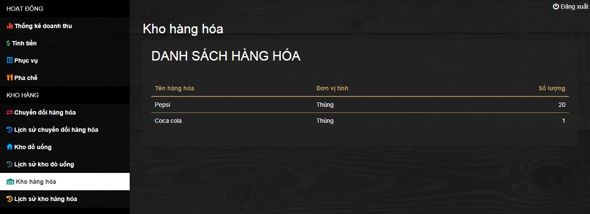

Khi mới khởi tạo, phần mềm hoàn toàn không có dữ liệu, bạn cần nhập những thiết lập của phần mềm và các danh mục cần thiết.
Chọn mục thiết lập hệ thống ở cuối menu quản trị. Nhập các thông tin: tên quán, địa chỉ, logo, khổ giấy in hóa đơn, kích thước chữ trên hóa đơn, phụ thu cho tất cả hóa đơn, lý do phụ thu, giảm giá cho tất cả hóa đơn. Sau đó nhấn lưu thiết lập.
Khổ giấy in hóa đơn thông dụng thường là khổ 57mm và khổ 80mm, quý khách vui lòng chọn đúng khổ giấy của máy in hóa đơn để nội dung hóa đơn vừa với khổ giấy. Kích thước chữ trên hóa đơn thường từ 8mm đến 10mm.
Mục phụ thu cho tất cả hóa đơn sẽ cộng thêm tiền phụ thu vào mọi hóa đơn (ví dụ như phục vụ nhạc aucoustic) kèm theo lý do phục thu. Các thông tin này sẽ được hiện trên hóa đơn. Mục giảm giá cho tất cả hóa đơn được sử dụng khi có chương trình khuyến mãi. Nếu thông số nhỏ hơn 100 sẽ được tính theo phần trăm tổng tiền, nếu lớn hơn 100 sẽ tính bằng số tiền được nhập vào.
Chọn Tài khoản từ menu quản trị.
Chọn Thêm tài khoản để thêm tài khoản người dùng
Điền thông tin người dùng rồi nhấn vào Thêm tài khoản.
Loại tài khoản dùng để chỉ định loại tài khoản cho nhân viên. Có 4 loại tài khoản là phục vụ, pha chế, thu ngân và quản lý. Tài khoản phục vụ chỉ sử dụng được chức năng phục vụ của phần mềm, tài khoản pha chế chỉ sử dụng được chức năng pha chế của phần mềm, tài khoản thu ngân sử dụng được chức năng tính tiền, thống kê doanh thu, các chức năng liên quan đến kho đồ uống và kho hàng. Tài khoản quản lý được sử dụng toàn bộ chức năng của phần mềm.
Mật khẩu đăng nhập phải ít nhất 6 ký tự, bao gồm chữ cái và số để đảm bảo tính bảo mật.
Muốn sửa thông tin tài khoản hoặc xóa tài khoản, nhấp vào tên tài khoản trong danh sách, một hộp thoại sẽ mở ra chứa thông tin cần sửa.
Thay đổi thông tin cần thiết rồi nhấn cập nhật. Nhấn xóa để xóa tài khoản. Khi cập nhật, mật khẩu tài khoản vẫn giữ nguyên.
Muốn đặt lại mật khẩu tài khoản, điền mật khẩu mới rồi nhấn đổi mật khẩu.
Trước khi thêm bàn, cần phải thêm khu vực bàn để có thể sắp xếp bàn theo khu vực. Chọn khu vực bàn từ menu quản trị.
Chọn Thêm khu vực để thêm một khu vực bàn mới.
Đặt tên khu vực bàn rồi nhấn Thêm.
Muốn sửa khu vực bàn, nhấp vào tên khu vực, sửa tên khu vực rồi nhấn cập nhật. Nhấn Xóa để xóa khu vực.
Loại bàn dùng để chia bàn thành nhiều loại khác nhau. Ví dụ như bàn trong phòng máy lạnh sẽ tính thêm phụ thu, bàn thường thì không tính.
Chọn Loại bàn từ menu quản trị.
Nhấp vào Thêm loại bàn để thêm một loại bàn mới.
Đặt tên loại bàn và tiền phụ thu rồi nhấn Thêm. Tiền phụ thu dưới 100 sẽ tính theo phần trăm, trên 100 sẽ tính theo số tiền.
Muốn sửa thông tin loại bàn, nhấp vào một loại bàn cụ thể, thay đổi thông tin rồi nhấn Cập nhật. Nhấn Xóa để xóa loại bàn.
Nhấp vào Bàn từ menu quản trị.
Nhấp vào Thêm bàn để thêm một bàn mới.
Nhập các thông số của bàn bao gồm tên bàn, số chỗ ngồi, khu vực, loại bàn, sau đó nhân Thêm
Để sửa một bàn, nhấp vào tên bàn từ danh sách, thay đổi thông tin rồi nhấn Cập nhật. Nhấn Xóa để xóa bàn.
Nhấp vào Loại đồ uống tại menu quản trị.
Chọn Thêm loại đồ uống để thêm loại đồ uống mới
Nhập tên loại đồ uống rồi chọn Thêm.
Để sửa tên loại đồ uống, nhấp vào tên đồ uống từ danh sách, thay đổi tên sau đó nhấn Cập nhât. Nhấn Xóa để xóa loại đồ uống.
Chọn Đồ uống tại menu quản trị.
Để thêm đồ uống mới, chọn Thêm đồ uống.
Nhập các thông tin của đồ uống bao gồm tên, số thứ tự trên menu, loại đồ uống, giá, có pha chế hay không.
Số thứ tự trên menu dùng để sắp sếp thứ tự của đồ uống cho giống với trên quyển menu, tránh lộn xộn gây khó khăn khi tìm kiếm. Một số loại đồ uống đặt trưng như nước đóng chai, lon, loại này sẽ không pha chế mà sẽ được trừ trực tiếp trong khi, những loại này được phân riêng thành không pha chế. Tích vào Không pha chế nếu như đồ uống là không pha chế.
Để sửa thông tin đồ uống, nhấp vào đồ uống từ danh sách. Thay đổi thông tin sau đó nhấn Cập nhật. Nhấn Xóa để xóa đồ uống.
Những món đồ uống không pha chế được nhập về từ nhà cung cấp và lưu trong kho. Lúc nhập về thường là thùng hoặc lóc, còn lúc bán ra lại là chai hoặc lon. Vì vậy cần phân loại chúng và chuyển đổi hàng hóa thích hợp.
Chọn Đơn vị tính từ menu quản trị
Chọn Thêm đơn vị tính để thêm đơn vị tính.
Nhập tên đơn vị tính rồi chọn Thêm.
Để sử đơn vị tính, nhấp vào đơn vị tính từ danh sách. Đổi tên đơn vị tính sau đó nhấn Cập Nhật. Nhấn Xóa để xóa đơn vị tính.
Đồ uống đống chai/lon khi nhập về sẽ tồn tại dưới dạng hàng hóa, được lưu giữ trong kho hàng. Khi lấy ra để bán (thường lấy ra theo số lượng thùng hoặc lóc), hàng hóa cần được chuyển đổi sang đơn vị nhỏ hơn để bán (thường là chai hoặc lon, một thùng hoặc lóc thì có nhiều chai/lon bên trong). Lúc này hàng hóa được chuyển đổi thành đồ uống không pha chế, sẽ được lưu vào kho đồ uống. Khi gọi món, đồ uống trong kho này sẽ được trừ tự động.
Chọn Hàng hóa từ menu quảng trị.
Chọn Thêm hàng hóa để thêm một danh mục hàng hóa mới.
Đặt tên hàng hóa và chọn đơn vị tính phù hợp. Sau đó nhấn Thêm.
Để sửa thông tin hàng hóa, nhấp vào hàng hóa từ danh sách, sửa thông tin, sau đó nhấn Cập nhật. Nhấn Xóa để xóa hàng hóa.
Kho hàng hóa cho biết số lượng của từng loại hàng hóa đang có trong kho. Vì vậy cần phải nhập kho mỗi khi lấy hàng về hoặc khi vừa mới sử dụng phần mềm.
Chọn Kho hàng hóa từ menu quản trị.

Danh mục hàng hóa sẽ được hiển thị kèm theo số lượng hiện tại trong kho.
Nhấp vào hàng hóa cần nhập để bắt đầu nhập kho.
Nhập vào số lượng muốn nhập, sau đó chọn Nhập kho. Nút Xuất kho và Thay đổi số lượng chỉ được dùng trong những trường hợp thật sự cần thiết, không nên sử dụng chức năng này.
Mọi hoạt động nhập kho, xuất kho hay thay đổi số lượng đều được ghi lại lịch sử. Xem lại lịch sử tại mục Lịch sử kho hàng hóa trên menu quản trị.
Khi hàng hóa đem ra khỏi kho lưu trữ cần được chuyển đổi thành đồ uống để có thể phục vụ cho khách. Đồ uống đóng chai/lon lúc này được để bên ngoài chứ không còn để trong kho lưu trữ nữa, lúc này sẽ được phân vào Kho đồ uống. Ví dụ một thùng Mirinda có 24 lon bên trong, bạn vào kho lấy 1 thùng đem ra quầy pha chế để tiện lấy từng lon ra cho khách. Lúc này hàng hóa Mirinda (thùng) sẽ được chuyển đổi thành đồ uống Mirinda với tỷ lệ 1 thùng bằng 24 đơn vị đồ uống. Phần mềm sẽ tự động trừ đi hàng hóa trong kho và công thêm vào kho đồ uống.
Chọn Chuyển đổi hàng hóa từ menu quản trị.
Chọn nguyên liệu (hàng hóa), số lượng, loại thành phẩm (đồ uống), điền tỷ lệ (ví dụ 1 = 24), chọn thành phẩm (đồ uống được chuyển đổi thành), phần mềm sẽ tự tính ra số lượng. Sau đó nhấn chuyển đổi.
Trường hợp chuyển đồi từ hàng hóa thành hàng ít được dùng, chỉ được dùng trong trường hợp chuyển đổi từ đơn vị này sang đơn vị kia, ví dụ 1 thùng bằng 4 lóc.
Phần mềm sẽ tự động ghi lại lịch sử chuyển đổi hàng hóa. Chọn Lịch sử chuyển đổi hàng hóa từ menu quản trị để xem lại lịch sử.
Hầu như không sử dụng chức năng này vì đồ uống đa phần được nhập bằng cách chuyển đổi từ hàng hóa sang đồ uống, tuy nhiên, chúng tôi vẫn đưa vào chức năng này cho những trường hợp cần thiêt.
Chọn Kho đồ uống. Danh sách đồ uống không pha chế sẽ được hiển thị ở đây cùng với số lượng.
Nhấp vào đồ uống cần nhập kho để nhập kho. Nhập số lượng cần nhập rồi chọn Nhập kho. Chức năng Thay đổi số lượng chỉ được sử dụng cho những trường hợp thật sự cần thiết, nên trách sử dụng chức năng này.
Lịch sử nhập kho đồ uống sẽ được ghi lại, bao gồm việc nhập kho bằng cách chuyển đổi hàng hóa. Chọn Lịch sử kho đồ uống để xem lại lịch sử.
Chức năng thống kê doanh thu sẽ cho biết doanh thu và số lượng hóa đơn trong khoảng thời gian mà bạn chọn.
Chọn Thống kê doanh thu từ menu quảng trị.
Mặc định, phần mềm sẽ hiển thị doanh thu của ngày hiện tại. Chọn khoảng thời gian bắt đầu và kết thúc rồi nhấn Xem để xem doanh thu trong một khoảng thời gian mong muốn.
Nhấp vào Chi tiết để xem chi tiết nội dung hóa đơn.
{kind=link}
{kind=link}
{kind=link}
{kind=link}
{kind=link}
{kind=link}
{kind=link}
{kind=link}
{kind=link}
{kind=link}
{kind=link}
{kind=link}
{kind=link}
{kind=link}
{kind=link}
{kind=link}
{kind=link}
{kind=link}
{kind=link}
{kind=link}
{kind=link}
{kind=link}
{kind=link}
{kind=link}
{kind=link}
{kind=link}
{kind=link}
{kind=link}
{kind=link}
{kind=link}
{kind=link}
{kind=link}
{kind=link}
{kind=link}